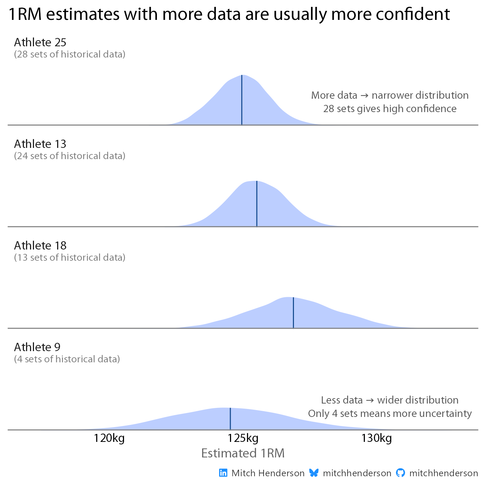

You can get more accurate 1RM estimates by using a statistical model that accounts for differences between athletes. They can also tell you how certain their estimate are (which matters).
S&C coaches collect training data to monitor progress and evaluate the effectiveness of their programming. A common method in strength training is to calculate an estimated one repetition maximum (or e1RM) using a formula and track how it changes over time. Lots of coaches are happy to use e1RM as a progress indicator instead of testing a true 1RM during a program or in-season because they don’t negatively impact training (integrates into existing training sessions), are safer (lower weight), and data can be collected more frequently (faster program refinements). True 1RM testing might only be programmed a handful of times per season (if at all) so using training data to regularly estimate strength increases or detect when a program should be adjusted is a good idea.
Code
library(tidyverse)library(gganimate)library(scales)library(ggtext)library(gt)library(gtExtras)library(geomtextpath)library(brms)library(tidybayes)library(ggdist)library(colorspace)mitchhenderson::font_hoist("Myriad Pro")socials <- mitchhenderson::social_caption(icon_colour ="dodgerblue")units <-"kg"colours <-c("#E31937", "#134A8E", "#16A34A")theme_set(theme_classic(base_size =16, base_family ="Myriad Pro Regular") +theme(plot.title =element_markdown(face ="bold"),plot.subtitle =element_text(size =14, color ="grey40", face ="bold"),axis.title.x =element_text(size =14, color ="grey40", face ="bold"),plot.caption =element_markdown(color ="grey50", size =10),axis.ticks =element_blank(),axis.line =element_line(colour ="grey50"),plot.title.position ="plot" ))
Python code outputs will differ from rendered results
The visualisations and tables on this page are generated from the R code. Running the Python code will produce the equivalent analyses but with different styling (e.g. fonts, themes, annotations) because Python uses different plotting and table libraries. The analytical conclusions are the same though.
Code
import polars as plimport numpy as npimport matplotlib.pyplot as pltimport matplotlib.animation as animationfrom plotnine import*from great_tables import GT, style, locimport pymc as pmimport arviz as azimport polars.selectors as csunits ="kg"colours = ["#E31937", "#134A8E", "#16A34A"]theme_set( theme_classic(base_size=14)+ theme( plot_title=element_text(weight="bold"), plot_subtitle=element_text(size=12, color="grey"), axis_title_x=element_text(size=12, color="grey"), axis_ticks=element_blank(), axis_line=element_line(colour="grey"), ))
formulas = {"Epley": lambda reps: 100/ (1+ reps /30),"Brzycki": lambda reps: 100* (37- reps) /36,"Mayhew": lambda reps: 52.2+41.9* np.exp(-0.055* reps),"Lombardi": lambda reps: 100/ (reps**0.10),"O'Conner": lambda reps: 100/ (1+ reps /40),"Wathan": lambda reps: 48.8+53.8* np.exp(-0.075* reps),"Lander": lambda reps: 101.3-2.67123* reps,}# Generate datareps_range = np.arange(1, 21)formula_names =list(formulas.keys())# Calculate %1RM for each formulae1rm_data = {name: func(reps_range) for name, func in formulas.items()}# Create figure and initial empty linesfig, ax = plt.subplots(figsize=(10, 5.5))fig.subplots_adjust(right=0.85)# Store line objectsgrey_lines = []for name in formula_names: (line,) = ax.plot([], [], color="lightgrey", linewidth=0.8) grey_lines.append(line)(highlight_line,) = ax.plot([], [], color="#E31937", linewidth=2.5)label_text = ax.text(20.5, 50, "", color="#E31937", fontsize=12, fontweight="bold", va="center")ax.set_xlim(1, 23)ax.set_ylim(40, 100)ax.set_xticks(range(1, 21))ax.set_yticks(range(40, 101, 10))ax.set_yticklabels([f"{y}%"for y inrange(40, 101, 10)])ax.set_xlabel("Number of Repetitions")ax.set_title("1RM Estimation Formulas", fontweight="bold", fontsize=14)ax.spines[["top", "right"]].set_visible(False)def init():for line in grey_lines: line.set_data([], []) highlight_line.set_data([], []) label_text.set_text("")return grey_lines + [highlight_line, label_text]def animate(frame): highlighted = formula_names[frame]# Update all linesfor i, name inenumerate(formula_names):if name != highlighted: grey_lines[i].set_data(reps_range, e1rm_data[name]) grey_lines[i].set_color("lightgrey")else: grey_lines[i].set_data([], [])# Update highlighted line highlight_line.set_data(reps_range, e1rm_data[highlighted])# Update label label_text.set_position((20.5, e1rm_data[highlighted][-1])) label_text.set_text(highlighted)return grey_lines + [highlight_line, label_text]anim = animation.FuncAnimation( fig, animate, init_func=init, frames=len(formula_names), interval=1000, blit=True)anim.save("1rm_formulas.gif", writer="pillow", fps=1)plt.close()
But none of these:
Account for strength endurance differences between athletes
Some athletes (fast twitch, higher metabolic cost per rep) have high 1RMs but find higher rep sets challenging. Other athletes (better oxidative capacity, lower metabolic cost per rep) can perform many reps at moderate intensities but quickly hit their 1RM ceiling with more weight. A better 1RM estimate would take into account what’s known about the physiological characteristics of the athlete. This directly impacts how accurate the e1RM will be. If a fast twitch athlete does a max reps set of 14 x 100kg, I’d expect their 1RM to be higher than a more oxidative athlete performing the same 14 x 100kg because they’re better suited to high intensity work.
The standard formulas don’t do this.
Tell me how certain they are in their estimate
The standard formulas WILL ALWAYS give you a 1RM estimate, doesn’t matter how confident or UNconfident they are. The 1RM estimate will also always just be a single value. There’s a big difference in how I’d interpret a 100kg e1RM if it’s 80% certain of being between 98–102kg (pretty precise) versus 80% certain of being between 77.5–122.5kg (practically useless). There’s also a big difference in 1RM certainty when the estimate is based on an athlete doing a max rep set completing 2-5 reps (closer to true 1RM; higher certainty) compared 10+ reps (further from true 1RM; lower certainty).
We also become more familiar about an athlete’s ability the more we work with them and get to know them. I’d have a lot more confidence predicting the 1RM of an athlete I’d worked with, gotten to know, and collected training data on for years compared to someone new without much training data available. A better 1RM estimate would incorporate all these sources of uncertainty and honestly express how confident it is.
The standard formulas don’t do this.
My solution
The idea is to extend one of the standard e1RM formulas by building it into a statistical model that takes the athlete it’s estimating the 1RM for into account. It’ll be fit using the athlete’s past data so it learns how they handle higher weight vs higher reps. It’s like a smarter version of the standard formula tailored to the athlete. Having this extra information helps it make more accurate predictions.
The model will also be a Bayesian model. These have advantages over conventional statistical models when it comes to expressing uncertainty (among other things). So instead of just getting one number, you get a full distribution representing the uncertainty in the 1RM estimate (e.g., “The 1RM estimate is 100kg with 80% probability of it being between 98 and 102kg”).1 This distribution accounts for all the sources of upstream uncertainty (amount of data available on the athlete lifting, number of reps they completed, etc).
To show you what I mean, we need some data.
Simulate data
Code
set.seed(2534)# Population hyperparameters (ground truth)n_athletes <-30mean_n_obs_per_athlete <-15min_n_obs <-5max_n_obs <-30# True 1RM population parameterspop_mean_1rm <-140pop_sd_1rm <-15# Endurance coefficient population parameterspop_mean_endurance <-30pop_sd_endurance <-5# Maybe discuss importance of this on results (heterogenous endurance profiles = bigger gain from player specific parameters)min_reps <-2max_reps <-15# Observation noiseobs_noise_sd <-2# Generate athlete-level ground truthathletes <-tibble(athlete_id =1:n_athletes,true_1rm =rnorm(n_athletes, mean = pop_mean_1rm, sd = pop_sd_1rm),true_endurance =rnorm( n_athletes,mean = pop_mean_endurance,sd = pop_sd_endurance ),n_observations =sample(min_n_obs:max_n_obs, n_athletes, replace =TRUE))# Generate observationssimulated_data <- athletes |>rowwise() |>reframe(athlete_id = athlete_id,true_1rm = true_1rm,true_endurance = true_endurance,session_id =seq_len(n_observations),reps =sample(min_reps:max_reps, n_observations, replace =TRUE) ) |>mutate(# Theoretical weight from modified Epley formulaweight_theoretical = true_1rm / (1+ reps / true_endurance),# Add normally distributed noiseweight_observed = weight_theoretical +rnorm(n(), 0, obs_noise_sd) )
Different random number generators
R and Python use different random number generation algorithms, so even with the same seed value, the simulated data will differ between languages. This means specific values (e.g. individual athlete 1RMs, credible intervals) won’t match exactly. The overall patterns will be consistent, and the same analytical conclusions apply.
I’ve simulated 30 fake athletes, each with their own 1RM, strength endurance capacity, and number of previous sessions of data where they’ve performed a max reps set for this given exercise.
Note
I’m going light on simulation details here to keep this accessible. Expand the section below to get more statistical details on the parameters of the simulated data.
Simulation technical details (optional)
I’ve defined the “squad” (30 athletes) to have a mean 1RM of 140kg
and standard deviation of 15kg drawn from a random normal distribution.
I also assign them an endurance ability (also drawn
from a normal distribution with a mean of 30 and standard deviation of
5).
Each athlete will have data from somewhere between 5 and 30 previous
training sessions where they’ve done this exercises til failure.
For each of these max rep sets, the athletes complete somewhere
between 2 and 15 reps (randomly sampled with replacement from a uniform
distribution). I calculate a theoretical weight they should be able to
complete for the set given their simulated 1RM and reps performed based
on a modified Epley formula (probably most commonly used e1RM formula,
modified to account for variable endurance ability).
I finally simulate the actual weight they lifted for the set by
taking the weight they theoretically could lift given their simulated
1RM and reps, added some random noise (because humans work like that)
drawn randomly from a normal distribution (mean of 0, SD of 2).
preview_df = pl.concat( [ athletes.head(5).with_columns(cs.by_dtype(pl.Float64).round(1)).cast(pl.String), pl.DataFrame({col: ["⋮"] for col in athletes.columns}), athletes.tail(1).with_columns(cs.by_dtype(pl.Float64).round(1)).cast(pl.String), ])GT(preview_df)
athlete_id
true_1rm
true_endurance
n_observations
1
1
145.4
27.8
28
2
2
131.2
41.8
20
3
3
139.6
31.8
21
4
4
133.6
26.1
29
5
5
97.8
32.9
30
6..29
30
30
147.9
28.5
6
I use these athletes and their characteristics to simulate realistic weights and reps. This gives me 582 simulated max rep sets across the 30 athletes.
sets_preview = simulated_data.select( pl.exclude("^true.*$", "weight_theoretical")).with_columns(cs.by_dtype(pl.Float64).round(1))preview_df = pl.concat( [ sets_preview.head(5).cast(pl.String), pl.DataFrame({col: ["⋮"] for col in sets_preview.columns}), sets_preview.tail(1).cast(pl.String), ])GT(preview_df)
athlete_id
session_id
reps
weight_observed
1
1
1
7
116.9
2
1
2
15
94.3
3
1
3
4
127.8
4
1
4
14
99.4
5
1
5
3
128.0
6..581
582
30
6
7
116.2
The model
I’ll specify the model to follow a modified Epley formula.
Reasons for this:
It’s probably the most commonly used of the standard 1RM estimate formulas
It’s fairly simple (good for demo purposes)
I used it as part of how the data was simulated, so seeing how the model’s performance compares to the standard Epley formula for predicting the true (albeit simulated) 1RMs will be a good test.
Tip
If I had real training data (instead of simulated), I would fit a bunch of different model specifications to see which one performs best.
The standard Epley is weight * (1 + reps / 30).
The modification I’m using just changes the 30 (fixed constant representing how quickly strength drops off with more reps; same for everyone) to a parameter the model will optimise based on the data for each athlete. Each athlete gets their own value for this based on how they handle high intensity sets or high volume sets.
I’ll fit the model on all the simulated data except the most recent set for each athlete. I’ll keep these sets as a small holdout or test data for comparing predictive performance between my model and the standard Epley formula.
Stats details about the model (optional)
The standard Epley formula estimates 1RM from a submaximal lift, but
this treats 1RM as the outcome (which we don’t observe directly). What
we actually observe is the weight lifted for a given number of reps.
Solving for weight, the formula becomes
weight = 1RM / (1 + reps / 30). This makes weight the
outcome, matching the data that’s observed in reality. The 1RM becomes a
latent parameter we estimate, and we replace the fixed constant 30 with
an estimated endurance parameter, which is log-transformed to
ensure positivity and improve sampling efficiency.
The hierarchical structure specifies that both 1RM and endurance vary
by athlete with partial pooling. The amount of regularisation or
shrinkage is adaptive. Athletes with less data get pulled more toward
the group mean and athletes with more data retain more of their
individual signal.
Weakly informative priors regularise the model (preventing
overfitting and improving convergence) without dominating the
likelihood. With reasonable data, the posterior will be driven primarily
by the observed (simulated) data.
Although they’re not included in this post (I wanted to keep it
tight), I did do prior predictive checks (to ensure my priors were
plausible), model diagnostic checks (to ensure no issues during
sampling), and posterior predictive checks (to ensure the model’s
assumptions adequately captured the features of the observed data).
Code
# Data prepmodel_data <- simulated_data |>rename(# brms doesn't like underscores or . in variable namesathlete = athlete_id,orm = true_1rm,weight = weight_observed )# Train/test split: hold out last observation per athleteholdout <- model_data |>group_by(athlete) |>slice_max(session_id, n =1) |>ungroup()train <- model_data |>anti_join(holdout, by =c("athlete", "session_id"))# Model specificationmodified_epley_formula <-bf( weight ~ orm / (1+ reps /exp(logk)), orm ~1+ (1| athlete), logk ~1+ (1| athlete),nl =TRUE)# Prior specificationmodified_epley_priors <-c(prior(normal(140, 30), nlpar ="orm", coef ="Intercept"),prior(normal(3.4, 0.3), nlpar ="logk", coef ="Intercept"), # log(30) ≈ 3.4prior(exponential(0.05), class ="sd", nlpar ="orm"),prior(exponential(2), class ="sd", nlpar ="logk"),prior(exponential(0.2), class ="sigma"))modified_epley_model_fit <-brm(formula = modified_epley_formula,data = train,prior = modified_epley_priors,family =gaussian(),cores =4,chains =4,iter =4000,warmup =2000,control =list(adapt_delta =0.95, max_treedepth =12),seed =2534,file ="modified_epley_model_fit")estimate_1rm <-function(model, athlete_id, weight, reps) { model |>spread_draws(b_logk_Intercept, r_athlete__logk[athlete, ]) |>filter(athlete == athlete_id) |>mutate(est_endurance =exp(b_logk_Intercept + r_athlete__logk),est_1RM = weight * (1+ reps / est_endurance) ) |>select(.draw, athlete, est_endurance, est_1RM)}
Code
# Data prepmodel_data = simulated_data.rename( {"athlete_id": "athlete", "true_1rm": "orm", "weight_observed": "weight"})# Train/test split: hold out last observation per athleteholdout = model_data.sort("session_id").group_by("athlete").last()train = model_data.join( holdout.select("athlete", "session_id"), on=["athlete", "session_id"], how="anti")# Convert to numpy for PyMCathlete_idx, athlete_codes = ( train["athlete"].to_numpy(), np.unique(train["athlete"].to_numpy()),)athlete_idx_mapped = np.array([np.where(athlete_codes == a)[0][0] for a in athlete_idx])n_athletes =len(athlete_codes)weight = train["weight"].to_numpy()reps = train["reps"].to_numpy()# Model specificationwith pm.Model() as modified_epley_model:# Hyperpriors orm_mu = pm.Normal("orm_mu", mu=140, sigma=30) orm_sigma = pm.Exponential("orm_sigma", 0.05) logk_mu = pm.Normal("logk_mu", mu=3.4, sigma=0.3) # log(30) ≈ 3.4 logk_sigma = pm.Exponential("logk_sigma", 2)# Athlete-level parameters orm_athlete = pm.Normal("orm_athlete", mu=orm_mu, sigma=orm_sigma, shape=n_athletes) logk_athlete = pm.Normal("logk_athlete", mu=logk_mu, sigma=logk_sigma, shape=n_athletes )# Observation noise sigma = pm.Exponential("sigma", 0.2)# Modified Epley formula: weight = orm / (1 + reps / exp(logk)) mu = orm_athlete[athlete_idx_mapped] / (1+ reps / np.exp(logk_athlete[athlete_idx_mapped]) )# Likelihood weight_obs = pm.Normal("weight_obs", mu=mu, sigma=sigma, observed=weight)# Sample modified_epley_trace = pm.sample( draws=2000, tune=2000, cores=4, chains=4, random_seed=2534, target_accept=0.95, )# Function to estimate 1RMdef estimate_1rm(trace, athlete_id, weight, reps, n_samples=4000):# Get athlete index athlete_idx = np.where(athlete_codes == athlete_id)[0][0]# Extract posterior samples logk_samples = trace.posterior["logk_athlete"].values.reshape(-1, n_athletes)[ :, athlete_idx ]# Calculate estimated 1RM for each posterior sample est_endurance = np.exp(logk_samples) est_1rm = weight * (1+ reps / est_endurance)return {"athlete": athlete_id,"est_endurance": est_endurance[:n_samples],"est_1rm": est_1rm[:n_samples], }
Now the model is fit, I use it to make 1RM estimates with the help of a custom function I’ve defined called estimate_1rm(). It takes the model object, the athlete ID, and the weight and reps the athlete performed in the set as arguments and gives me back a distribution of predictions.
By seeing how close the model got to the true 1RM (defined in the simulation), and doing the same for the standard Epley formula, we can compare their predictive accuracy on new sets.3
logk_athlete = modified_epley_trace.posterior["logk_athlete"].values.reshape(-1, n_athletes)# Calculate mean endurance parameter for each athletemean_endurance = np.exp(logk_athlete.mean(axis=0))athlete_endurance_summary = pl.DataFrame( {"athlete": athlete_codes,"mean_endurance_parameter": mean_endurance, }).sort("mean_endurance_parameter")# Select athletes with worst, median, and best enduranceselected_athletes = ( athlete_endurance_summary.row(1), athlete_endurance_summary.row(14), athlete_endurance_summary.row(29),)selected_athlete_ids = [row[0] for row in selected_athletes]# Generate endurance profiles across rep rangereps_range = np.arange(1, 16)profiles = []for athlete_id in selected_athlete_ids: athlete_idx = np.where(athlete_codes == athlete_id)[0][0]# Get posterior samples for this athlete (no need to add logk_mu) logk_samples = logk_athlete[:, athlete_idx] endurance_samples = np.exp(logk_samples) mean_endurance_param = endurance_samples.mean()for reps in reps_range: pct_1rm_samples =100/ (1+ reps / endurance_samples) profiles.append( {"athlete": athlete_id,"reps": reps,"pct_est_1RM": np.median(pct_1rm_samples),"lower": np.percentile(pct_1rm_samples, 10),"upper": np.percentile(pct_1rm_samples, 90),"endurance_param": round(mean_endurance_param), } )endurance_profiles = pd.DataFrame(profiles)endurance_profiles["label"] = endurance_profiles.apply(lambda row: f"Athlete {int(row['athlete'])} (endurance = {int(row['endurance_param'])})", axis=1,)
To demonstrate this point, I’ll just show three athletes: the highest endurance (Athlete 12), the lowest endurance (Athlete 27), and one in the middle (Athlete 16).
See how each of their endurance parameters (that the model learned from their past training data) changes their 1RM estimate curve to be tailored to their traits.
How much does having historical training data help?
When the model has more information to estimate a 1RM, it can typically afford to give a more confident estimate.5 Humans do this instinctively; we’re skeptical at first but grow confident after observing things repeatedly.
To demonstrate, here’s four athletes’ estimates after hypothetically performing a max reps set of 8 @ 100kg, each with a different amount of historical data used to train the model.
Notice how the shape of the 1RM estimate distribution becomes taller and thinner or wider and flatter as the amount of historical data changes. These shapes represent the level of certainty in the 1RM estimate and incorporate all sources of performance variability in the training data.
Code
athletes_varying_obs <- train |>count(athlete, name ="n_obs") |>arrange(n_obs) |>slice(seq(1, 30, by =9))data_varying_obs <- athletes_varying_obs |>mutate(estimate =map( athlete, \(x) estimate_1rm(modified_epley_model_fit, x, 100, 8) ),athlete =factor( athlete,levels =rev(athletes_varying_obs$athlete),labels =paste0("Athlete ",rev(athletes_varying_obs$athlete),"<br><span style='color:grey50; font-size:11pt;'>(",rev(n_obs)," sets of historical data)</span>" ) ) ) |>rename(athlete_id = athlete) |>unnest(estimate)annotations <-tibble(athlete_id =c( data_varying_obs |>filter(n_obs ==max(n_obs)) |>pull(athlete_id) |>unique(), data_varying_obs |>filter(n_obs ==min(n_obs)) |>pull(athlete_id) |>unique() ),x =c(130.5, 130.5),y =c(0.4, 0.4),label =c(paste0("More data → narrower distribution<br>",max(data_varying_obs$n_obs)," sets gives high confidence" ),paste0("Less data → wider distribution<br>Only ",min(data_varying_obs$n_obs)," sets means more uncertainty" ) ))historical_data_plot <- data_varying_obs |>ggplot(aes(x = est_1RM)) +facet_wrap(~athlete_id, ncol =1) +stat_slab(fill =lighten(colours[2], 0.75)) +stat_spike(at ="median", size =0, colour = colours[2]) +scale_thickness_shared() +geom_hline(yintercept =0, colour ="grey50", linewidth =1) +geom_richtext(data = annotations,aes(x = x, y = y, label = label),fill =NA,colour ="grey35",hjust =0.5,label.color =NA,size =4,family ="Myriad Pro Regular" ) +scale_x_continuous(labels =label_number(suffix = units),limits =c(117, 133) ) +labs(y =NULL,x ="Estimated 1RM",title ="1RM estimates with more data are usually more confident",caption = socials ) +scale_y_continuous(expand =expansion(mult =c(0, 0.05))) +theme(axis.text.y =element_blank(),axis.title.y =element_blank(),axis.line =element_blank(),strip.background =element_blank(),strip.text =element_markdown(family ="Myriad Pro Regular", hjust =0) )historical_data_plot
Code
athletes_varying_obs = ( train.group_by("athlete") .len() .rename({"len": "n_obs"}) .sort("n_obs") .gather_every(9, offset=0))# Generate 1RM estimates for each athlete (hypothetical 8 reps @ 100kg)varying_obs_data = []for row in athletes_varying_obs.iter_rows(named=True): athlete_id = row["athlete"] n_obs = row["n_obs"] pred = estimate_1rm(modified_epley_trace, athlete_id, weight=100, reps=8)for est in pred["est_1rm"]: varying_obs_data.append( {"athlete": athlete_id,"n_obs": n_obs,"est_1RM": est, } )varying_obs_df = pd.DataFrame(varying_obs_data)varying_obs_df["label"] = varying_obs_df.apply(lambda row: f"Athlete {int(row['athlete'])} ({int(row['n_obs'])} sets of historical data)", axis=1,)# Order by n_obs descending for facetslabel_order = ( varying_obs_df.groupby("label", observed=True)["n_obs"] .first() .sort_values(ascending=False) .index.tolist())varying_obs_df["label"] = pd.Categorical( varying_obs_df["label"], categories=label_order, ordered=True)( ggplot(varying_obs_df, aes(x="est_1RM"))+ geom_density(fill="#a8c7e6", alpha=0.8)+ geom_vline( varying_obs_df.groupby("label", observed=True)["est_1RM"] .median() .reset_index(), aes(xintercept="est_1RM"), colour="#134A8E", size=0.8, )+ facet_wrap("~label", ncol=1)+ scale_x_continuous(labels=lambda x: [f"{v:.0f}{units}"for v in x])+ labs( x="Estimated 1RM", y="", title="1RM estimates with more data are usually more confident", )+ theme_classic()+ theme( axis_text_y=element_blank(), axis_ticks_major_y=element_blank(), axis_title_y=element_blank(), axis_line_y=element_blank(), strip_text=element_text(ha="left"), strip_background=element_blank(), plot_title=element_text(weight="bold"), ))

How much accuracy do you lose with higher rep sets?
The further a max reps set is from a true 1RM, the more the model has to extrapolate to provide an estimate. This extrapolation causes uncertainty in the 1RM estimates to compound. This is intuitive; predicting the weather a few hours from now isn’t impressive, but forecasting days or weeks in advance is much harder and carries a lot more uncertainty because of the added time for conditions to stray from your expectations.
Same idea here. Heavy sets where only 2–5 reps are completed are more representative of what your 1RM actually is.
np.random.seed(2534)# Pick an athleterep_count_plot_athlete =6# Get their data and sample one set from each rep binrep_count_athlete_data = ( train.filter(pl.col("athlete") == rep_count_plot_athlete) .with_columns( pl.when(pl.col("reps") <=5) .then(pl.lit("low")) .when(pl.col("reps") <=10) .then(pl.lit("mid")) .otherwise(pl.lit("high")) .alias("rep_bin") ) .group_by("rep_bin") .agg(pl.all().sample(n=1, seed=2534)) .explode(pl.exclude("rep_bin")))# Generate predictions for each setrep_count_data = []for row in rep_count_athlete_data.iter_rows(named=True): pred = estimate_1rm( modified_epley_trace, athlete_id=rep_count_plot_athlete, weight=row["weight"], reps=row["reps"], ) scenario =f"{row['reps']} reps @ {round(row['weight'])}{units}"for est in pred["est_1rm"]: rep_count_data.append( {"reps": row["reps"],"scenario": scenario,"est_1RM": est, } )rep_count_df = pd.DataFrame(rep_count_data)# Order scenarios by rep countscenario_order = ( rep_count_df.groupby("scenario", observed=True)["reps"] .first() .sort_values() .index.tolist())rep_count_df["scenario"] = pd.Categorical( rep_count_df["scenario"], categories=scenario_order, ordered=True)( ggplot(rep_count_df, aes(x="est_1RM"))+ geom_density(fill="#a8c7e6", alpha=0.8)+ geom_vline( rep_count_df.groupby("scenario", observed=True)["est_1RM"] .median() .reset_index(), aes(xintercept="est_1RM"), colour="#134A8E", size=0.8, )+ facet_wrap("~scenario", ncol=1)+ scale_x_continuous(labels=lambda x: [f"{v:.0f}{units}"for v in x])+ labs( x="Estimated 1RM", y="", title="1RM estimates are more confident with lower rep sets", subtitle=f"Athlete {rep_count_plot_athlete} | Max rep sets from simulated training data", )+ theme_classic()+ theme( axis_text_y=element_blank(), axis_ticks_major_y=element_blank(), axis_title_y=element_blank(), axis_line_y=element_blank(), strip_text=element_text(ha="left"), strip_background=element_blank(), plot_title=element_text(weight="bold"), plot_subtitle=element_text(color="grey"), ))
Integrating this
Integrating this into a larger system would involve deploying the model to a server so that estimates can be requested on demand. Analysis tools (R, Python, Excel via Power Query, etc) would send athlete data to the model and receive 1RM estimates in return. From there, you’d set up the model to refit on a schedule so that estimates stay current and are available whenever you’re programming or reviewing training.
Conclusion
My simulated data might not align with the patterns in real training data, but I think the idea that some athletes can do heavy weight well while others do higher reps well is valid and should/can be captured when you’re estimating 1RM from a submaximal set for max reps.
Key takeaways:
Athletes have different characteristics that statistical models can learn and account for when making inferences or predictions.
Quantifying uncertainty helps us make better decisions. Especially knowing when we don’t have enough information to act confidently.
Models like this can be fit to your athletes’ data, updated automatically as new training results come in, and integrated into your programming or monitoring workflows.
These intervals are what you get with Bayesian model estimates and they are what I think most people want confidence intervals to be. There is x% probability that the interval contains the true value.↩︎
This evaluation is pretty crude (holding out each athletes most recent set for testing; only 30 sets total). It’s kind of how it would work in real life though; predictions after each new session are like their own test set (assuming model is updated before each session). A stronger approach to evaluation during the research phase of something like (as opposed to ongoing use) would be to use something like cross validation.↩︎
Take with a big grain of salt as it’s only an average over 30 estimates.↩︎
Although more data doesn’t always mean a more certain estimate, sometimes it’s just more certain that the athlete is inherently variable.↩︎
Source Code
---title: "Making 1 rep max estimates more accurate and honest"description: | Use more of the information you have.author: Mitch Hendersondate: 2026-01-02thumbnailImage: /img/1rm_curve_thumbnail.pngdraft: falsefilters: [details]format: html: code-fold: true code-tools: true html-table-processing: noneknitr: opts_chunk: dev: "ragg_png"---::: {.callout-note}## tl;drYou can get more accurate 1RM estimates by using a statistical model that accounts for differences between athletes. They can also tell you how certain their estimate are (which matters).:::<br>[S&C coaches](https://en.wikipedia.org/wiki/Strength_and_conditioning_coach) collect training data to monitor progress and evaluate the effectiveness of their programming. A common method in strength training is to calculate an [**estimated one repetition maximum**](https://en.wikipedia.org/wiki/One-repetition_maximum#Estimating_1RM) (or e1RM) using a [formula](https://maxcalculator.com/guides/1rm-formulas) and track how it changes over time. Lots of coaches are happy to use e1RM as a progress indicator instead of testing a true 1RM during a program or in-season because they don't negatively impact training (integrates into existing training sessions), are safer (lower weight), and data can be collected more frequently (faster program refinements). [True 1RM](https://en.wikipedia.org/wiki/One-repetition_maximum#Measuring_1RM) testing might only be programmed a handful of times per season (if at all) so using training data to regularly estimate strength increases or detect when a program should be adjusted is a good idea.::: {.panel-tabset group="language"}## {height=25}```{r}#| output: falselibrary(tidyverse)library(gganimate)library(scales)library(ggtext)library(gt)library(gtExtras)library(geomtextpath)library(brms)library(tidybayes)library(ggdist)library(colorspace)mitchhenderson::font_hoist("Myriad Pro")socials <- mitchhenderson::social_caption(icon_colour ="dodgerblue")units <-"kg"colours <-c("#E31937", "#134A8E", "#16A34A")theme_set(theme_classic(base_size =16, base_family ="Myriad Pro Regular") +theme(plot.title =element_markdown(face ="bold"),plot.subtitle =element_text(size =14, color ="grey40", face ="bold"),axis.title.x =element_text(size =14, color ="grey40", face ="bold"),plot.caption =element_markdown(color ="grey50", size =10),axis.ticks =element_blank(),axis.line =element_line(colour ="grey50"),plot.title.position ="plot" ))```## {height=30}::: {.callout-note}## Python code outputs will differ from rendered resultsThe visualisations and tables on this page are generated from the R code. Running the Python code will produce the equivalent analyses but with different styling (e.g. fonts, themes, annotations) because Python uses different plotting and table libraries. The analytical conclusions are the same though.:::```{python}#| eval: falseimport polars as plimport numpy as npimport matplotlib.pyplot as pltimport matplotlib.animation as animationfrom plotnine import*from great_tables import GT, style, locimport pymc as pmimport arviz as azimport polars.selectors as csunits ="kg"colours = ["#E31937", "#134A8E", "#16A34A"]theme_set( theme_classic(base_size=14)+ theme( plot_title=element_text(weight="bold"), plot_subtitle=element_text(size=12, color="grey"), axis_title_x=element_text(size=12, color="grey"), axis_ticks=element_blank(), axis_line=element_line(colour="grey"), ))```:::## The problemThere are [lots of different formulas out there to estimate a 1RM](https://maxcalculator.com/guides/1rm-formulas).::: {.panel-tabset group="language"}## {height=25}```{r}#| warning: false#| output: falseformulas <-list(Epley =function(reps) {100/ (1+ reps /30) },Brzycki =function(reps) {100* (37- reps) /36 },Mayhew =function(reps) {52.2+41.9*exp(-0.055* reps) },Lombardi =function(reps) {100/ (reps^0.10) },`O'Conner`=function(reps) {100/ (1+ reps /40) },Wathan =function(reps) {48.8+53.8*exp(-0.075* reps) },Lander =function(reps) {101.3-2.67123* reps })reps_range <-1:20e1rm_data <-tibble(reps = reps_range) |>crossing(formula =names(formulas)) |>mutate(percent_1rm =map2_dbl(formula, reps, ~ formulas[[.x]](.y)) )e1rm_data_animated <- e1rm_data |>crossing(highlight =unique(e1rm_data$formula)) |>mutate(is_highlighted = formula == highlight,line_color =if_else(is_highlighted, "highlighted", "grey"),label =if_else(is_highlighted & reps ==max(reps), formula, NA_character_),line_size =if_else(is_highlighted, 2, 0.5) )animated_plot <- e1rm_data_animated |>ggplot(aes(x = reps, y = percent_1rm, group = formula)) +coord_cartesian(xlim =c(1, 20), clip ="off") +geom_line(data = e1rm_data_animated |>filter(!is_highlighted),aes(linewidth = line_size),colour ="grey70" ) +geom_line(data = e1rm_data_animated |>filter(is_highlighted),aes(linewidth = line_size),colour ="#E31937" ) +geom_text(aes(label = label),colour ="#E31937",family ="Myriad Pro Regular",hjust =0,nudge_x =0.5,size =6,fontface ="bold",show.legend =FALSE ) +scale_linewidth_identity() +scale_x_continuous(breaks =seq(1, 20, 1) ) +scale_y_continuous(labels =label_percent(scale =1),breaks =seq(40, 100, 10),limits =c(40, 100) ) +labs(title ="1RM Estimation Formulas",x ="Number of Repetitions",y =NULL,subtitle ="% of 1RM",caption = socials ) +theme(plot.margin =margin(10, 100, 10, 10),legend.position ="none" ) +transition_manual( highlight,cumulative =FALSE )animate( animated_plot,nframes =80,fps =10,width =8,height =4.5,device ="ragg_png")```## {height=30}```{python}#| eval: falseformulas = {"Epley": lambda reps: 100/ (1+ reps /30),"Brzycki": lambda reps: 100* (37- reps) /36,"Mayhew": lambda reps: 52.2+41.9* np.exp(-0.055* reps),"Lombardi": lambda reps: 100/ (reps**0.10),"O'Conner": lambda reps: 100/ (1+ reps /40),"Wathan": lambda reps: 48.8+53.8* np.exp(-0.075* reps),"Lander": lambda reps: 101.3-2.67123* reps,}# Generate datareps_range = np.arange(1, 21)formula_names =list(formulas.keys())# Calculate %1RM for each formulae1rm_data = {name: func(reps_range) for name, func in formulas.items()}# Create figure and initial empty linesfig, ax = plt.subplots(figsize=(10, 5.5))fig.subplots_adjust(right=0.85)# Store line objectsgrey_lines = []for name in formula_names: (line,) = ax.plot([], [], color="lightgrey", linewidth=0.8) grey_lines.append(line)(highlight_line,) = ax.plot([], [], color="#E31937", linewidth=2.5)label_text = ax.text(20.5, 50, "", color="#E31937", fontsize=12, fontweight="bold", va="center")ax.set_xlim(1, 23)ax.set_ylim(40, 100)ax.set_xticks(range(1, 21))ax.set_yticks(range(40, 101, 10))ax.set_yticklabels([f"{y}%"for y inrange(40, 101, 10)])ax.set_xlabel("Number of Repetitions")ax.set_title("1RM Estimation Formulas", fontweight="bold", fontsize=14)ax.spines[["top", "right"]].set_visible(False)def init():for line in grey_lines: line.set_data([], []) highlight_line.set_data([], []) label_text.set_text("")return grey_lines + [highlight_line, label_text]def animate(frame): highlighted = formula_names[frame]# Update all linesfor i, name inenumerate(formula_names):if name != highlighted: grey_lines[i].set_data(reps_range, e1rm_data[name]) grey_lines[i].set_color("lightgrey")else: grey_lines[i].set_data([], [])# Update highlighted line highlight_line.set_data(reps_range, e1rm_data[highlighted])# Update label label_text.set_position((20.5, e1rm_data[highlighted][-1])) label_text.set_text(highlighted)return grey_lines + [highlight_line, label_text]anim = animation.FuncAnimation( fig, animate, init_func=init, frames=len(formula_names), interval=1000, blit=True)anim.save("1rm_formulas.gif", writer="pillow", fps=1)plt.close()```:::```{r}#| echo: false#| warning: falseanimate( animated_plot,nframes =80,fps =10,width =8,height =4.5,device ="ragg_png")```But none of these:- Account for strength endurance differences between athletes Some athletes (fast twitch, higher metabolic cost per rep) have high 1RMs but find higher rep sets challenging. Other athletes (better oxidative capacity, lower metabolic cost per rep) can perform many reps at moderate intensities but quickly hit their 1RM ceiling with more weight. **A better 1RM estimate would take into account what's known about the physiological characteristics of the athlete**. This directly impacts how accurate the e1RM will be. If a fast twitch athlete does a max reps set of 14 x 100`r units`, I'd expect their 1RM to be higher than a more oxidative athlete performing the same 14 x 100`r units` because they're better suited to high intensity work. *The standard formulas don't do this*.<br>- Tell me how certain they are in their estimate The standard formulas WILL ALWAYS give you a 1RM estimate, doesn't matter how confident or UNconfident they are. The 1RM estimate will also always just be a single value. There's a big difference in how I'd interpret a 100kg e1RM if it's 80% certain of being between 98–102`r units` (pretty precise) versus 80% certain of being between 77.5–122.5`r units` (practically useless). There's also a big difference in 1RM certainty when the estimate is based on an athlete doing a max rep set completing 2-5 reps (closer to true 1RM; higher certainty) compared 10+ reps (further from true 1RM; lower certainty). We also become more familiar about an athlete's ability the more we work with them and get to know them. I'd have a lot more confidence predicting the 1RM of an athlete I'd worked with, gotten to know, and collected training data on for years compared to someone new without much training data available. **A better 1RM estimate would incorporate all these sources of uncertainty and honestly express how confident it is**. *The standard formulas don't do this*.<br>## My solutionThe idea is to extend one of the standard e1RM formulas by building it into a statistical model that takes the athlete it's estimating the 1RM for into account. It'll be fit using the athlete's past data so it learns how they handle higher weight vs higher reps. It's like a smarter version of the standard formula tailored to the athlete. Having this extra information helps it make more accurate predictions.The model will also be a [*Bayesian*](https://en.wikipedia.org/wiki/Bayesian_statistics) model. These have advantages over [conventional](https://en.wikipedia.org/wiki/Frequentist_probability) statistical models when it comes to expressing uncertainty ([among other things](https://www.youtube.com/watch?v=R6d-AbkhBQ8)). So instead of just getting one number, you get a full distribution representing the uncertainty in the 1RM estimate (e.g., "The 1RM estimate is 100`r units` with 80% probability of it being between 98 and 102`r units`").[^1] This distribution accounts for all the sources of upstream uncertainty (amount of data available on the athlete lifting, number of reps they completed, etc).[^1]: Note that this is different, and IMO much more intuitive, to what a confidence interval tells you. Confidence intervals are confusing [and even trained scientists often misinterpret them](https://pubmed.ncbi.nlm.nih.gov/24420726/).To show you what I mean, we need some data.### Simulate data::: {.panel-tabset group="language"}## {height=25}```{r}set.seed(2534)# Population hyperparameters (ground truth)n_athletes <-30mean_n_obs_per_athlete <-15min_n_obs <-5max_n_obs <-30# True 1RM population parameterspop_mean_1rm <-140pop_sd_1rm <-15# Endurance coefficient population parameterspop_mean_endurance <-30pop_sd_endurance <-5# Maybe discuss importance of this on results (heterogenous endurance profiles = bigger gain from player specific parameters)min_reps <-2max_reps <-15# Observation noiseobs_noise_sd <-2# Generate athlete-level ground truthathletes <-tibble(athlete_id =1:n_athletes,true_1rm =rnorm(n_athletes, mean = pop_mean_1rm, sd = pop_sd_1rm),true_endurance =rnorm( n_athletes,mean = pop_mean_endurance,sd = pop_sd_endurance ),n_observations =sample(min_n_obs:max_n_obs, n_athletes, replace =TRUE))# Generate observationssimulated_data <- athletes |>rowwise() |>reframe(athlete_id = athlete_id,true_1rm = true_1rm,true_endurance = true_endurance,session_id =seq_len(n_observations),reps =sample(min_reps:max_reps, n_observations, replace =TRUE) ) |>mutate(# Theoretical weight from modified Epley formulaweight_theoretical = true_1rm / (1+ reps / true_endurance),# Add normally distributed noiseweight_observed = weight_theoretical +rnorm(n(), 0, obs_noise_sd) )```## {height=30}::: {.callout-note}## Different random number generatorsR and Python use different random number generation algorithms, so even with the same seed value, the simulated data will differ between languages. This means specific values (e.g. individual athlete 1RMs, credible intervals) won't match exactly. The overall patterns will be consistent, and the same analytical conclusions apply.:::```{python}#| eval: falsenp.random.seed(2534)# Population hyperparameters (ground truth)n_athletes =30mean_n_obs_per_athlete =15min_n_obs =5max_n_obs =30# True 1RM population parameterspop_mean_1rm =140pop_sd_1rm =15# Endurance coefficient population parameterspop_mean_endurance =30pop_sd_endurance =5min_reps =2max_reps =15# Observation noiseobs_noise_sd =2# Generate athlete-level ground truthathletes = pl.DataFrame( {"athlete_id": range(1, n_athletes +1),"true_1rm": np.random.normal(pop_mean_1rm, pop_sd_1rm, n_athletes),"true_endurance": np.random.normal( pop_mean_endurance, pop_sd_endurance, n_athletes ),"n_observations": np.random.randint(min_n_obs, max_n_obs +1, n_athletes), })# Generate observations by expanding each athlete's rowsn_total = athletes["n_observations"].sum()simulated_data = ( athletes.select( pl.col("athlete_id").repeat_by("n_observations").explode(), pl.col("true_1rm").repeat_by("n_observations").explode(), pl.col("true_endurance").repeat_by("n_observations").explode(), ) .with_columns( session_id=pl.int_range(pl.len()).over("athlete_id") +1, ) .with_columns( reps=pl.Series(np.random.randint(min_reps, max_reps +1, n_total)), ) .with_columns( weight_theoretical=pl.col("true_1rm")/ (1+ pl.col("reps") / pl.col("true_endurance")), ) .with_columns( weight_observed=pl.col("weight_theoretical")+ pl.Series(np.random.normal(0, obs_noise_sd, n_total)), ))```:::I've simulated `r n_athletes` fake athletes, each with their own 1RM, strength endurance capacity, and number of previous sessions of data where they've performed a max reps set for this given exercise.::: callout-noteI'm going light on simulation details here to keep this accessible. Expand the section below to get more statistical details on the parameters of the simulated data.:::::: {.details summary="Simulation technical details (optional)"}I've defined the "squad" (`r n_athletes` athletes) to have a mean 1RM of `r paste0(pop_mean_1rm, units)` and standard deviation of `r paste0(pop_sd_1rm, units)` drawn from a random normal distribution. I also assign them an **endurance ability** (also drawn from a normal distribution with a mean of `r pop_mean_endurance` and standard deviation of `r pop_sd_endurance`).Each athlete will have data from somewhere between `r min_n_obs` and `r max_n_obs` previous training sessions where they've done this exercises til failure.For each of these max rep sets, the athletes complete somewhere between `r min_reps` and `r max_reps` reps (randomly sampled with replacement from a uniform distribution). I calculate a theoretical weight they should be able to complete for the set given their simulated 1RM and reps performed based on a modified Epley formula (probably most commonly used e1RM formula, modified to account for variable endurance ability).I finally simulate the actual weight they lifted for the set by taking the weight they theoretically could lift given their simulated 1RM and reps, added some random noise (because humans work like that) drawn randomly from a normal distribution (mean of 0, SD of `r obs_noise_sd`).:::The simulated athlete data looks like this:::: {.panel-tabset group="language"}## {height=25}```{r}#| output: falseathletes |>mutate(across(where(is.numeric), \(x) round(x, 1))) |>gt_preview() |>gt_theme_538(quiet =TRUE)```## {height=30}```{python}#| eval: falsepreview_df = pl.concat( [ athletes.head(5).with_columns(cs.by_dtype(pl.Float64).round(1)).cast(pl.String), pl.DataFrame({col: ["⋮"] for col in athletes.columns}), athletes.tail(1).with_columns(cs.by_dtype(pl.Float64).round(1)).cast(pl.String), ])GT(preview_df)```:::```{r}#| echo: falseathletes |>mutate(across(where(is.numeric), \(x) round(x, 1))) |>gt_preview() |>gt_theme_538(quiet =TRUE)```I use these athletes and their characteristics to simulate realistic weights and reps. This gives me `r nrow(simulated_data)` simulated max rep sets across the `r n_athletes` athletes.The simulated sets data looks like this:::: {.panel-tabset group="language"}## {height=25}```{r}#| output: falsesimulated_data |>select(-starts_with("true"), -weight_theoretical) |>mutate(across(where(is.numeric), \(x) round(x, 1))) |>gt_preview() |>gt_theme_538(quiet =TRUE)```## {height=30}```{python}#| eval: falsesets_preview = simulated_data.select( pl.exclude("^true.*$", "weight_theoretical")).with_columns(cs.by_dtype(pl.Float64).round(1))preview_df = pl.concat( [ sets_preview.head(5).cast(pl.String), pl.DataFrame({col: ["⋮"] for col in sets_preview.columns}), sets_preview.tail(1).cast(pl.String), ])GT(preview_df)```:::```{r}#| echo: falsesimulated_data |>select(-starts_with("true"), -weight_theoretical) |>mutate(across(where(is.numeric), \(x) round(x, 1))) |>gt_preview() |>gt_theme_538(quiet =TRUE)```### The modelI'll specify the model to follow a modified [Epley formula](https://1repmaxcalculator.net/topics/epley-formula).Reasons for this:1. It's probably the most commonly used of the standard 1RM estimate formulas2. It's fairly simple (good for demo purposes)3. I used it as part of how the data was simulated, so seeing how the model's performance compares to the standard Epley formula for predicting the true (albeit simulated) 1RMs will be a good test.::: callout-tipIf I had real training data (instead of simulated), I would fit a bunch of different model specifications to see which one performs best.:::The standard Epley is `weight * (1 + reps / 30)`.The modification I'm using just changes the `30` (fixed constant representing how quickly strength drops off with more reps; same for everyone) to a parameter the model will optimise based on the data for each athlete. Each athlete gets their own value for this based on how they handle high intensity sets or high volume sets.I'll fit the model on all the simulated data *except the most recent set for each athlete*. I'll keep these sets as a small holdout or test data for comparing predictive performance between my model and the standard Epley formula.::: {.details summary="Stats details about the model (optional)"}The standard Epley formula estimates 1RM from a submaximal lift, but this treats 1RM as the outcome (which we don't observe directly). What we actually observe is the weight lifted for a given number of reps. Solving for weight, the formula becomes `weight = 1RM / (1 + reps / 30)`. This makes weight the outcome, matching the data that's observed in reality. The 1RM becomes a latent parameter we estimate, and we replace the fixed constant 30 with an estimated *endurance parameter*, which is log-transformed to ensure positivity and improve sampling efficiency.The hierarchical structure specifies that both 1RM and endurance vary by athlete with partial pooling. The amount of regularisation or shrinkage is adaptive. Athletes with less data get pulled more toward the group mean and athletes with more data retain more of their individual signal.Weakly informative priors regularise the model (preventing overfitting and improving convergence) without dominating the likelihood. With reasonable data, the posterior will be driven primarily by the observed (simulated) data.Although they're not included in this post (I wanted to keep it tight), I did do prior predictive checks (to ensure my priors were plausible), model diagnostic checks (to ensure no issues during sampling), and posterior predictive checks (to ensure the model's assumptions adequately captured the features of the observed data).:::::: {.panel-tabset group="language"}## {height=25}```{r}#| output: false# Data prepmodel_data <- simulated_data |>rename(# brms doesn't like underscores or . in variable namesathlete = athlete_id,orm = true_1rm,weight = weight_observed )# Train/test split: hold out last observation per athleteholdout <- model_data |>group_by(athlete) |>slice_max(session_id, n =1) |>ungroup()train <- model_data |>anti_join(holdout, by =c("athlete", "session_id"))# Model specificationmodified_epley_formula <-bf( weight ~ orm / (1+ reps /exp(logk)), orm ~1+ (1| athlete), logk ~1+ (1| athlete),nl =TRUE)# Prior specificationmodified_epley_priors <-c(prior(normal(140, 30), nlpar ="orm", coef ="Intercept"),prior(normal(3.4, 0.3), nlpar ="logk", coef ="Intercept"), # log(30) ≈ 3.4prior(exponential(0.05), class ="sd", nlpar ="orm"),prior(exponential(2), class ="sd", nlpar ="logk"),prior(exponential(0.2), class ="sigma"))modified_epley_model_fit <-brm(formula = modified_epley_formula,data = train,prior = modified_epley_priors,family =gaussian(),cores =4,chains =4,iter =4000,warmup =2000,control =list(adapt_delta =0.95, max_treedepth =12),seed =2534,file ="modified_epley_model_fit")estimate_1rm <-function(model, athlete_id, weight, reps) { model |>spread_draws(b_logk_Intercept, r_athlete__logk[athlete, ]) |>filter(athlete == athlete_id) |>mutate(est_endurance =exp(b_logk_Intercept + r_athlete__logk),est_1RM = weight * (1+ reps / est_endurance) ) |>select(.draw, athlete, est_endurance, est_1RM)}```## {height=30}```{python}#| eval: false# Data prepmodel_data = simulated_data.rename( {"athlete_id": "athlete", "true_1rm": "orm", "weight_observed": "weight"})# Train/test split: hold out last observation per athleteholdout = model_data.sort("session_id").group_by("athlete").last()train = model_data.join( holdout.select("athlete", "session_id"), on=["athlete", "session_id"], how="anti")# Convert to numpy for PyMCathlete_idx, athlete_codes = ( train["athlete"].to_numpy(), np.unique(train["athlete"].to_numpy()),)athlete_idx_mapped = np.array([np.where(athlete_codes == a)[0][0] for a in athlete_idx])n_athletes =len(athlete_codes)weight = train["weight"].to_numpy()reps = train["reps"].to_numpy()# Model specificationwith pm.Model() as modified_epley_model:# Hyperpriors orm_mu = pm.Normal("orm_mu", mu=140, sigma=30) orm_sigma = pm.Exponential("orm_sigma", 0.05) logk_mu = pm.Normal("logk_mu", mu=3.4, sigma=0.3) # log(30) ≈ 3.4 logk_sigma = pm.Exponential("logk_sigma", 2)# Athlete-level parameters orm_athlete = pm.Normal("orm_athlete", mu=orm_mu, sigma=orm_sigma, shape=n_athletes) logk_athlete = pm.Normal("logk_athlete", mu=logk_mu, sigma=logk_sigma, shape=n_athletes )# Observation noise sigma = pm.Exponential("sigma", 0.2)# Modified Epley formula: weight = orm / (1 + reps / exp(logk)) mu = orm_athlete[athlete_idx_mapped] / (1+ reps / np.exp(logk_athlete[athlete_idx_mapped]) )# Likelihood weight_obs = pm.Normal("weight_obs", mu=mu, sigma=sigma, observed=weight)# Sample modified_epley_trace = pm.sample( draws=2000, tune=2000, cores=4, chains=4, random_seed=2534, target_accept=0.95, )# Function to estimate 1RMdef estimate_1rm(trace, athlete_id, weight, reps, n_samples=4000):# Get athlete index athlete_idx = np.where(athlete_codes == athlete_id)[0][0]# Extract posterior samples logk_samples = trace.posterior["logk_athlete"].values.reshape(-1, n_athletes)[ :, athlete_idx ]# Calculate estimated 1RM for each posterior sample est_endurance = np.exp(logk_samples) est_1rm = weight * (1+ reps / est_endurance)return {"athlete": athlete_id,"est_endurance": est_endurance[:n_samples],"est_1rm": est_1rm[:n_samples], }```:::Now the model is fit, I use it to make 1RM estimates with the help of a custom function I've defined called `estimate_1rm()`. It takes the model object, the athlete ID, and the weight and reps the athlete performed in the set as arguments and gives me back a distribution of predictions.::: {.panel-tabset group="language"}## {height=25}```{r}#| code-fold: falseexample_predictions <-estimate_1rm(model = modified_epley_model_fit,athlete_id =17,weight =102.5,reps =5)```## {height=30}```{python}#| eval: false#| code-fold: falseexample_predictions = estimate_1rm( trace=modified_epley_trace, athlete_id=17, weight=102.5, reps=5)```:::::: {.panel-tabset group="language"}## {height=25}```{r}#| output: falseexample_dist <- example_predictions |>ggplot(aes(x = est_1RM)) +stat_slab(fill =lighten(colours[2], 0.75)) +stat_spike(at ="median", size =0, colour = colours[2]) +scale_thickness_shared() +annotate("curve",x =120.5,xend =median(example_predictions$est_1RM) +0.1,y =1,yend =0.925,curvature =0.25,arrow =arrow(length =unit(2, "mm"), type ="closed"),colour ="grey60" ) +annotate("text",x =121.3,y =0.95,label ="1RM estimate\n(median)",hjust =0.5,colour ="grey35",family ="Myriad Pro Regular" ) +annotate("text",x =116.7,y =0.2,label ="Lower end of\nestimates",hjust =0.5,colour ="grey35",family ="Myriad Pro Regular" ) +annotate("text",x =122,y =0.2,label ="Upper end of\nestimates",hjust =0.5,colour ="grey35",family ="Myriad Pro Regular" ) +labs(x ="Estimated 1RM",caption = socials,title ="Full distribution of 1RM estimates",subtitle =paste0("Athlete 17 | Max reps set of 5 @ 102.5", units) ) +scale_x_continuous(breaks =seq(116, 122, 1),labels =label_number(suffix = units) ) +scale_y_continuous(expand =expansion(mult =c(0, 0.05))) +theme(axis.text.y =element_blank(),axis.title.y =element_blank(),axis.line.y =element_blank() )example_dist```## {height=30}```{python}#| eval: falseexample_pred_df = pd.DataFrame({"est_1RM": example_predictions["est_1rm"]})( ggplot(example_pred_df, aes(x="est_1RM"))+ geom_density(fill="#a8c7e6", alpha=0.8)+ geom_vline( xintercept=example_pred_df["est_1RM"].median(), color="#134A8E", size=1 )+ labs( x="Estimated 1RM", y=None, title="Full distribution of 1RM estimates", subtitle=f"Athlete 17 | Max reps set of 5 @ 102.5{units}", )+ scale_x_continuous(labels=lambda x: [f"{v:.0f}{units}"for v in x])+ theme_classic()+ theme( axis_text_y=element_blank(), axis_ticks_major_y=element_blank(), axis_line_y=element_blank(), axis_title_y=element_blank(), plot_title=element_text(weight="bold"), plot_subtitle=element_text(color="grey"), ))```:::```{r}#| echo: falseexample_dist```Sometimes the full distribution is a bit much and you just want a summary (e.g. median with 80% credible intervals).[^2] Easy.[^2]: These intervals are what you get with Bayesian model estimates and they are what I think most people want confidence intervals to be. There is x% probability that the interval contains the true value.::: {.panel-tabset group="language"}## {height=25}```{r}#| output: falseexample_summary <- example_predictions |>median_qi(.width =0.8) |>select(-contains("endurance"), -.interval) |>mutate(across(where(is.numeric), \(x) round(x, 1))) |>gt() |>gt_theme_538(quiet =TRUE)example_summary```## {height=30}```{python}#| eval: falsemedian_1rm = np.median(example_predictions["est_1rm"])lower_1rm = np.percentile(example_predictions["est_1rm"], 10)upper_1rm = np.percentile(example_predictions["est_1rm"], 90)summary_df = pl.DataFrame( {"athlete": [example_predictions["athlete"]],"est_1RM": [round(median_1rm, 1)],"est_1RM_lower": [round(lower_1rm, 1)],"est_1RM_upper": [round(upper_1rm, 1)], })GT(summary_df)```:::```{r}#| echo: falseexample_summary```## How accurate is it?By seeing how close the model got to the true 1RM (defined in the simulation), and doing the same for the standard Epley formula, we can compare their predictive accuracy on new sets.[^3][^3]: This evaluation is pretty crude (holding out each athletes most recent set for testing; only `r n_athletes` sets total). It's kind of how it would work in real life though; predictions after each new session are like their own test set (assuming model is updated before each session). A stronger approach to evaluation during the research phase of something like (as opposed to ongoing use) would be to use something like [cross validation](https://www.youtube.com/watch?v=fSytzGwwBVw).::: {.panel-tabset group="language"}## {height=25}```{r}#| output: falseholdout_predictions <- holdout |>rowwise() |>mutate(model_prediction =estimate_1rm( modified_epley_model_fit, athlete, weight, reps ) |>summarise(prediction =median(est_1RM)) |>pull(prediction),standard_epley_prediction = weight * (1+ reps /30) ) |>ungroup() |>left_join( athletes |>select(athlete = athlete_id, true_1rm),by ="athlete" ) |>mutate(model_error = model_prediction - true_1rm,standard_epley_error = standard_epley_prediction - true_1rm,difference =abs(model_error) -abs(standard_epley_error),most_accurate_method =case_when(abs(difference) <=1~"Similar predictions (±1)", difference <0~paste0("Model closer by ",round(abs(difference), 1), units ), difference >0~paste0("Formula closer by ",round(abs(difference), 1), units ), ) )tbl <- holdout_predictions |>select( athlete, weight, reps,`True 1RM`= true_1rm,`Model prediction`= model_prediction,`Formula prediction`= standard_epley_prediction,`Most accurate method`= most_accurate_method ) |>mutate(across(where(is.numeric), \(x) round(x, 1))) |>gt() |>gt_theme_538(quiet =TRUE) |>cols_align(align ="right",columns =`Most accurate method` ) |>tab_style(style =cell_fill(color ="#DCFCE7"),locations =cells_body(rows =startsWith(`Most accurate method`, "Model")) ) |>tab_style(style =cell_text(color = colours[3],weight ="bold" ),locations =cells_body(columns =`Most accurate method`,rows =startsWith(`Most accurate method`, "Model") ) ) |>tab_style(style =cell_fill(color ="#DBEAFE"),locations =cells_body(rows =startsWith(`Most accurate method`, "Formula")) ) |>tab_style(style =cell_text(color ="#2563EB",weight ="bold" ),locations =cells_body(columns =`Most accurate method`,rows =startsWith(`Most accurate method`, "Formula") ) ) |>tab_source_note(source_note =html(socials) ) |>tab_style(style =cell_text(align ="right"),locations =cells_source_notes() ) |>tab_options(source_notes.font.size =15 )tbl```## {height=30}```{python}#| eval: falseholdout_with_truth = holdout.join( athletes.select(pl.col("athlete_id").alias("athlete"), "true_1rm"), on="athlete", how="left",)# Get predictions for each holdout observationmodel_predictions = []for row in holdout_with_truth.iter_rows(named=True): pred = estimate_1rm( modified_epley_trace, athlete_id=row["athlete"], weight=row["weight"], reps=row["reps"], ) model_predictions.append(np.median(pred["est_1rm"]))# Calculate standard Epley predictionsholdout_predictions = ( holdout_with_truth.with_columns( pl.Series("Model prediction", model_predictions), (pl.col("weight") * (1+ pl.col("reps") /30)).alias("Formula prediction"), ) .with_columns( (pl.col("Model prediction") - pl.col("true_1rm")).alias("model_error"), (pl.col("Formula prediction") - pl.col("true_1rm")).alias("standard_epley_error" ), ) .with_columns( (pl.col("model_error").abs() - pl.col("standard_epley_error").abs()).alias("difference" ), ) .with_columns( pl.when(pl.col("difference").abs() <=1) .then(pl.lit("Similar predictions (±1)")) .when(pl.col("difference") <0) .then( pl.lit("Model closer by ")+ (pl.col("difference").abs().round(1)).cast(pl.String)+ pl.lit(units) ) .otherwise( pl.lit("Formula closer by ")+ (pl.col("difference").abs().round(1)).cast(pl.String)+ pl.lit(units) ) .alias("Most accurate method") ))display_df = ( holdout_predictions.sort("athlete") .select("athlete","weight","reps", pl.col("true_1rm").alias("True 1RM"),"Model prediction","Formula prediction","Most accurate method", ) .with_columns(cs.by_dtype(pl.Float64).round(1)))( GT(display_df) .tab_style( style=style.fill(color="#DCFCE7"), locations=loc.body( rows=pl.col("Most accurate method").str.starts_with("Model") ), ) .tab_style( style=style.text(color="#16A34A", weight="bold"), locations=loc.body( columns="Most accurate method", rows=pl.col("Most accurate method").str.starts_with("Model"), ), ) .tab_style( style=style.fill(color="#DBEAFE"), locations=loc.body( rows=pl.col("Most accurate method").str.starts_with("Formula") ), ) .tab_style( style=style.text(color="#2563EB", weight="bold"), locations=loc.body( columns="Most accurate method", rows=pl.col("Most accurate method").str.starts_with("Formula"), ), ))```:::```{r}#| echo: falsetbl```Mean absolute error for the model was **`r paste0(round(mean(abs(holdout_predictions$model_error)), 1), units)`**.Mean absolute error for the regular Epley formula was **`r paste0(round(mean(abs(holdout_predictions$standard_epley_error)), 1), units)`**.The model was therefore **`r paste0(round(mean(abs(holdout_predictions$standard_epley_error)) - mean(abs(holdout_predictions$model_error)), 1), units)` more accurate on average** in this small simulated sample.[^4][^4]: Take with a big grain of salt as it's only an average over `r n_athletes` estimates.## What has the model learned about the athletes?::: {.panel-tabset group="language"}## {height=25}```{r}athlete_endurance_summary <- modified_epley_model_fit |>spread_draws(b_logk_Intercept, r_athlete__logk[athlete, ]) |>mutate(endurance_parameter =exp(b_logk_Intercept + r_athlete__logk)) |>group_by(athlete) |>summarise(mean_endurance_parameter =mean(endurance_parameter)) |>arrange(mean_endurance_parameter)# Grab the athletes with the worst, median, and best strength enduranceselected_athletes <- athlete_endurance_summary |>slice(c(2, 15, 30)) |>pull(athlete)athlete_labels <- athlete_endurance_summary |>filter(athlete %in% selected_athletes) |>mutate(label =paste0("Athlete ", athlete," (endurance parameter = ",round(mean_endurance_parameter, 0),")" ) )endurance_profiles <- modified_epley_model_fit |>spread_draws( b_orm_Intercept, b_logk_Intercept, r_athlete__orm[athlete, ], r_athlete__logk[athlete, ] ) |>filter(athlete %in% selected_athletes) |>mutate(est_1RM = b_orm_Intercept + r_athlete__orm,endurance_parameter =exp(b_logk_Intercept + r_athlete__logk), ) |>crossing(reps =1:15) |>mutate(pct_est_1RM =100/ (1+ reps / endurance_parameter)) |>group_by(athlete, reps) |>median_qi(pct_est_1RM, .width =0.8) |>left_join(athlete_labels, by ="athlete")```## {height=30}```{python}#| eval: falselogk_athlete = modified_epley_trace.posterior["logk_athlete"].values.reshape(-1, n_athletes)# Calculate mean endurance parameter for each athletemean_endurance = np.exp(logk_athlete.mean(axis=0))athlete_endurance_summary = pl.DataFrame( {"athlete": athlete_codes,"mean_endurance_parameter": mean_endurance, }).sort("mean_endurance_parameter")# Select athletes with worst, median, and best enduranceselected_athletes = ( athlete_endurance_summary.row(1), athlete_endurance_summary.row(14), athlete_endurance_summary.row(29),)selected_athlete_ids = [row[0] for row in selected_athletes]# Generate endurance profiles across rep rangereps_range = np.arange(1, 16)profiles = []for athlete_id in selected_athlete_ids: athlete_idx = np.where(athlete_codes == athlete_id)[0][0]# Get posterior samples for this athlete (no need to add logk_mu) logk_samples = logk_athlete[:, athlete_idx] endurance_samples = np.exp(logk_samples) mean_endurance_param = endurance_samples.mean()for reps in reps_range: pct_1rm_samples =100/ (1+ reps / endurance_samples) profiles.append( {"athlete": athlete_id,"reps": reps,"pct_est_1RM": np.median(pct_1rm_samples),"lower": np.percentile(pct_1rm_samples, 10),"upper": np.percentile(pct_1rm_samples, 90),"endurance_param": round(mean_endurance_param), } )endurance_profiles = pd.DataFrame(profiles)endurance_profiles["label"] = endurance_profiles.apply(lambda row: f"Athlete {int(row['athlete'])} (endurance = {int(row['endurance_param'])})", axis=1,)```:::To demonstrate this point, I'll just show three athletes: the highest endurance (Athlete `r selected_athletes[3]`), the lowest endurance (Athlete `r selected_athletes[1]`), and one in the middle (Athlete `r selected_athletes[2]`).See how each of their endurance parameters (that the model learned from their past training data) changes their 1RM estimate curve to be tailored to their traits.::: {.panel-tabset group="language"}## {height=25}```{r}#| output: falsepredicted_curves_plot <- endurance_profiles |>ggplot(aes(x = reps, y = pct_est_1RM, colour = label, fill = label) ) +geom_ribbon(aes(ymin = .lower, ymax = .upper), alpha =0.15, colour =NA) +geom_textline(aes(label = label),hjust =0.8,size =5,family ="Myriad Pro Regular" ) +scale_y_continuous(labels =label_percent(scale =1)) +scale_x_continuous(limits =c(1, 15), breaks =seq(1, 15, 1)) +scale_colour_manual(values =c(colours[3], colours[1], colours[2])) +scale_fill_manual(values =c(colours[3], colours[1], colours[2])) +labs(x ="Repetitions",title ="Athletes with lower endurance fatigue faster",subtitle ="% of 1RM",caption = socials,y =NULL ) +theme(legend.position ="none")predicted_curves_plot```## {height=30}```{python}#| eval: false( ggplot( endurance_profiles, aes(x="reps", y="pct_est_1RM", colour="label", fill="label") )+ geom_ribbon(aes(ymin="lower", ymax="upper"), alpha=0.15, linetype="None")+ geom_line(size=1)+ scale_y_continuous(labels=lambda x: [f"{v:.0f}%"for v in x])+ scale_x_continuous(limits=(1, 15), breaks=range(1, 16))+ scale_colour_manual(values=[colours[2], colours[0], colours[1]])+ scale_fill_manual(values=[colours[2], colours[0], colours[1]])+ labs( x="Repetitions", y=None, title="Athletes with lower endurance fatigue faster", subtitle="% of 1RM", )+ theme_classic()+ theme( legend_position="bottom", legend_title=element_blank(), plot_title=element_text(weight="bold"), plot_subtitle=element_text(color="grey"), axis_title_y=element_blank(), ))```:::```{r}#| echo: falsepredicted_curves_plot```## How much does having historical training data help?When the model has more information to estimate a 1RM, it can typically afford to give a more confident estimate.[^5] Humans do this instinctively; we're skeptical at first but grow confident after observing things repeatedly.[^5]: Although more data doesn't always mean a more certain estimate, sometimes it's just more certain that the athlete is inherently variable.To demonstrate, here's four athletes' estimates after hypothetically performing a max reps set of 8 \@ 100`r units`, each with a different amount of historical data used to train the model.Notice how the shape of the 1RM estimate distribution becomes taller and thinner or wider and flatter as the amount of historical data changes. These shapes represent the level of certainty in the 1RM estimate and incorporate all sources of performance variability in the training data.::: {.panel-tabset group="language"}## {height=25}```{r}#| output: falseathletes_varying_obs <- train |>count(athlete, name ="n_obs") |>arrange(n_obs) |>slice(seq(1, 30, by =9))data_varying_obs <- athletes_varying_obs |>mutate(estimate =map( athlete, \(x) estimate_1rm(modified_epley_model_fit, x, 100, 8) ),athlete =factor( athlete,levels =rev(athletes_varying_obs$athlete),labels =paste0("Athlete ",rev(athletes_varying_obs$athlete),"<br><span style='color:grey50; font-size:11pt;'>(",rev(n_obs)," sets of historical data)</span>" ) ) ) |>rename(athlete_id = athlete) |>unnest(estimate)annotations <-tibble(athlete_id =c( data_varying_obs |>filter(n_obs ==max(n_obs)) |>pull(athlete_id) |>unique(), data_varying_obs |>filter(n_obs ==min(n_obs)) |>pull(athlete_id) |>unique() ),x =c(130.5, 130.5),y =c(0.4, 0.4),label =c(paste0("More data → narrower distribution<br>",max(data_varying_obs$n_obs)," sets gives high confidence" ),paste0("Less data → wider distribution<br>Only ",min(data_varying_obs$n_obs)," sets means more uncertainty" ) ))historical_data_plot <- data_varying_obs |>ggplot(aes(x = est_1RM)) +facet_wrap(~athlete_id, ncol =1) +stat_slab(fill =lighten(colours[2], 0.75)) +stat_spike(at ="median", size =0, colour = colours[2]) +scale_thickness_shared() +geom_hline(yintercept =0, colour ="grey50", linewidth =1) +geom_richtext(data = annotations,aes(x = x, y = y, label = label),fill =NA,colour ="grey35",hjust =0.5,label.color =NA,size =4,family ="Myriad Pro Regular" ) +scale_x_continuous(labels =label_number(suffix = units),limits =c(117, 133) ) +labs(y =NULL,x ="Estimated 1RM",title ="1RM estimates with more data are usually more confident",caption = socials ) +scale_y_continuous(expand =expansion(mult =c(0, 0.05))) +theme(axis.text.y =element_blank(),axis.title.y =element_blank(),axis.line =element_blank(),strip.background =element_blank(),strip.text =element_markdown(family ="Myriad Pro Regular", hjust =0) )historical_data_plot```## {height=30}```{python}#| eval: falseathletes_varying_obs = ( train.group_by("athlete") .len() .rename({"len": "n_obs"}) .sort("n_obs") .gather_every(9, offset=0))# Generate 1RM estimates for each athlete (hypothetical 8 reps @ 100kg)varying_obs_data = []for row in athletes_varying_obs.iter_rows(named=True): athlete_id = row["athlete"] n_obs = row["n_obs"] pred = estimate_1rm(modified_epley_trace, athlete_id, weight=100, reps=8)for est in pred["est_1rm"]: varying_obs_data.append( {"athlete": athlete_id,"n_obs": n_obs,"est_1RM": est, } )varying_obs_df = pd.DataFrame(varying_obs_data)varying_obs_df["label"] = varying_obs_df.apply(lambda row: f"Athlete {int(row['athlete'])} ({int(row['n_obs'])} sets of historical data)", axis=1,)# Order by n_obs descending for facetslabel_order = ( varying_obs_df.groupby("label", observed=True)["n_obs"] .first() .sort_values(ascending=False) .index.tolist())varying_obs_df["label"] = pd.Categorical( varying_obs_df["label"], categories=label_order, ordered=True)( ggplot(varying_obs_df, aes(x="est_1RM"))+ geom_density(fill="#a8c7e6", alpha=0.8)+ geom_vline( varying_obs_df.groupby("label", observed=True)["est_1RM"] .median() .reset_index(), aes(xintercept="est_1RM"), colour="#134A8E", size=0.8, )+ facet_wrap("~label", ncol=1)+ scale_x_continuous(labels=lambda x: [f"{v:.0f}{units}"for v in x])+ labs( x="Estimated 1RM", y="", title="1RM estimates with more data are usually more confident", )+ theme_classic()+ theme( axis_text_y=element_blank(), axis_ticks_major_y=element_blank(), axis_title_y=element_blank(), axis_line_y=element_blank(), strip_text=element_text(ha="left"), strip_background=element_blank(), plot_title=element_text(weight="bold"), ))```:::```{r}#| echo: false#| warning: false#| fig-asp: 1historical_data_plot```## How much accuracy do you lose with higher rep sets?The further a max reps set is from a true 1RM, the more the model has to extrapolate to provide an estimate. This extrapolation causes uncertainty in the 1RM estimates to compound. This is intuitive; predicting the weather a few hours from now isn't impressive, but forecasting days or weeks in advance is much harder and carries a lot more uncertainty because of the added time for conditions to stray from your expectations.Same idea here. Heavy sets where only 2–5 reps are completed are more representative of what your 1RM actually is.::: {.panel-tabset group="language"}## {height=25}```{r}#| output: falseset.seed(2534)rep_count_plot_athlete <-6rep_count_plot_athlete_data <- train |>filter(athlete == rep_count_plot_athlete) |>mutate(rep_bin =case_when( reps <=5~"low", reps <=10~"mid",TRUE~"high" ) ) |>group_by(rep_bin) |>slice_sample(n =1) |>ungroup()rep_count_plot_athlete_1RM <- rep_count_plot_athlete_data$orm[1]rep_count_plot_data <- rep_count_plot_athlete_data |>pmap_dfr(\(reps, weight, ...) {estimate_1rm( modified_epley_model_fit,athlete_id = rep_count_plot_athlete,weight = weight,reps = reps ) |>mutate(scenario =paste0(reps, " reps @ ", round(weight, 0), units)) }) |>mutate(scenario =fct_reorder(scenario, parse_number(scenario)))scenario_levels <-levels(factor(rep_count_plot_data$scenario))rep_count_plot_annotations <-tibble(scenario =factor(scenario_levels, levels = scenario_levels),x = rep_count_plot_athlete_1RM -0.1,y =1,true_1RM_label =c("True 1RM", NA, NA),annotation =c("3 rep set → more confident",NA,"13 rep set → less confident" ))rep_count_plot <- rep_count_plot_data |>ggplot(aes(x = est_1RM)) +facet_wrap(~scenario, ncol =1) +stat_slab(fill =lighten(colours[2], 0.75)) +stat_spike(at ="median", size =0, colour = colours[2]) +scale_thickness_shared() +geom_hline(yintercept =0, colour ="grey50", linewidth =1) +geom_vline(xintercept = rep_count_plot_athlete_1RM,colour = colours[1],linetype ="dashed",linewidth =0.5 ) +geom_richtext(data = rep_count_plot_annotations,aes(x = x, y = y, label = true_1RM_label),fill =NA,colour = colours[1],label.color =NA,hjust =1,family ="Myriad Pro Regular" ) +geom_richtext(data = rep_count_plot_annotations,aes(x = x +4.5, y =0.4, label = annotation),fill =NA,size =4.5,colour ="grey35",label.color =NA,family ="Myriad Pro Regular" ) +labs(x ="Estimated 1RM (kg)",y =NULL,title ="1RM estimates are more confident with lower rep sets",subtitle =paste0("Athlete ", rep_count_plot_athlete," | Max rep sets from simulated training data" ),caption = socials ) +scale_x_continuous(labels =label_number(suffix = units),limits =c(122, 137) ) +theme(axis.text.y =element_blank(),axis.title.y =element_blank(),axis.line =element_blank(),strip.background =element_blank(),strip.text =element_markdown(family ="Myriad Pro Regular", hjust =0) )rep_count_plot```## {height=30}```{python}#| eval: falsenp.random.seed(2534)# Pick an athleterep_count_plot_athlete =6# Get their data and sample one set from each rep binrep_count_athlete_data = ( train.filter(pl.col("athlete") == rep_count_plot_athlete) .with_columns( pl.when(pl.col("reps") <=5) .then(pl.lit("low")) .when(pl.col("reps") <=10) .then(pl.lit("mid")) .otherwise(pl.lit("high")) .alias("rep_bin") ) .group_by("rep_bin") .agg(pl.all().sample(n=1, seed=2534)) .explode(pl.exclude("rep_bin")))# Generate predictions for each setrep_count_data = []for row in rep_count_athlete_data.iter_rows(named=True): pred = estimate_1rm( modified_epley_trace, athlete_id=rep_count_plot_athlete, weight=row["weight"], reps=row["reps"], ) scenario =f"{row['reps']} reps @ {round(row['weight'])}{units}"for est in pred["est_1rm"]: rep_count_data.append( {"reps": row["reps"],"scenario": scenario,"est_1RM": est, } )rep_count_df = pd.DataFrame(rep_count_data)# Order scenarios by rep countscenario_order = ( rep_count_df.groupby("scenario", observed=True)["reps"] .first() .sort_values() .index.tolist())rep_count_df["scenario"] = pd.Categorical( rep_count_df["scenario"], categories=scenario_order, ordered=True)( ggplot(rep_count_df, aes(x="est_1RM"))+ geom_density(fill="#a8c7e6", alpha=0.8)+ geom_vline( rep_count_df.groupby("scenario", observed=True)["est_1RM"] .median() .reset_index(), aes(xintercept="est_1RM"), colour="#134A8E", size=0.8, )+ facet_wrap("~scenario", ncol=1)+ scale_x_continuous(labels=lambda x: [f"{v:.0f}{units}"for v in x])+ labs( x="Estimated 1RM", y="", title="1RM estimates are more confident with lower rep sets", subtitle=f"Athlete {rep_count_plot_athlete} | Max rep sets from simulated training data", )+ theme_classic()+ theme( axis_text_y=element_blank(), axis_ticks_major_y=element_blank(), axis_title_y=element_blank(), axis_line_y=element_blank(), strip_text=element_text(ha="left"), strip_background=element_blank(), plot_title=element_text(weight="bold"), plot_subtitle=element_text(color="grey"), ))```:::```{r}#| fig-asp: 1#| warning: false#| echo: falserep_count_plot```## Integrating thisIntegrating this into a larger system would involve deploying the model to a server so that estimates can be requested on demand. Analysis tools (R, Python, Excel via Power Query, etc) would send athlete data to the model and receive 1RM estimates in return. From there, you'd set up the model to refit on a schedule so that estimates stay current and are available whenever you're programming or reviewing training.## ConclusionMy simulated data might not align with the patterns in real training data, but I think the idea that some athletes can do heavy weight well while others do higher reps well is valid and should/can be captured when you're estimating 1RM from a submaximal set for max reps.Key takeaways:- Athletes have different characteristics that statistical models can learn and account for when making inferences or predictions.- Quantifying uncertainty helps us make better decisions. Especially knowing when we don't have enough information to act confidently.- Models like this can be fit to your athletes' data, updated automatically as new training results come in, and integrated into your programming or monitoring workflows.